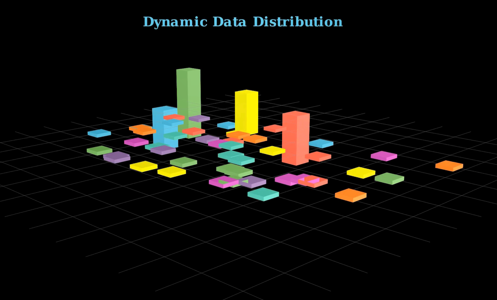

title: “Dynamic Data Distribution” format: revealjs editor: visual —
Introduction
Dynamic data distribution refers to how data values change over time or across space, often in unpredictable or evolving patterns. It demonstrates real-world processes like population growth, temperature fluctuations, network traffic, or financial market trends. Visualizing dynamic data helps reveal patterns, outliers, and trends that static data can’t show. For example, in urban planning, it can show how electricity usage varies hourly across a city. In finance, it illustrates changing asset prices. Dynamic data distribution is crucial for decision-making, forecasting, and real-time monitoring in industries like logistics, healthcare, weather forecasting, and smart city infrastructure. It turns raw numbers into meaningful insights.
Importing Manim
from manim import *We import everything from the Manim library. This allows us to access 3D scenes, geometries like Prism, and camera tools.
Tip: Use a virtual environment and install Manim with:
pip install manimDefining the Scene
class Cityscape3D(ThreeDScene):
def construct(self):We define a custom animation class Cityscape3D.
ThreeDScene allows use of a 3D camera.
construct() is Manim’s entry point: all animations go here.
Adding a Title
title = Text("Dynamic Data Distribution", font_size=26, weight=BOLD, color=BLUE)
title.to_edge(UP * 0.4)
self.add_fixed_in_frame_mobjects(title)
self.play(FadeIn(title, run_time=2))- Adds a title and places it near the top.
add_fixed_in_frame_mobjectskeeps the title static while the camera moves.
Initial Camera Orientation
self.set_camera_orientation(
phi=75 * DEGREES,
theta=-45 * DEGREES,
rate_func=rate_functions.linear,
run_time=6
)phitilts the camera (vertical axis).thetarotates it around the z-axis.rate_funccontrols transition speed (linear in this case).
Adjustment: Try run_time=4 if 6s feels too slow.
The Base Grid (NumberPlane)
base_plane = NumberPlane(
x_range=[-7, 7, 1], y_range=[-7, 7, 1],
axis_config={"stroke_opacity": 0},
background_line_style={
"stroke_color": GREY,
"stroke_width": 0.5,
"stroke_opacity": 0.7
}
)
self.add(base_plane)- Creates a light grey grid to simulate a floor.
- Axes are hidden (
stroke_opacity: 0) for a cleaner look. - Helps with spatial orientation.
Setting Up Histograms
histograms = VGroup()
colors = [RED, GREEN, BLUE, YELLOW, ORANGE, PURPLE, TEAL, PINK]
num_histograms = 50
min_height = 0.1VGroup()stores all histogram bars.- Cycles through a palette of 8 colors.
- Starting height is small (0.1) to animate growth later.
Adjustment: Increase num_histograms to 75–100 for denser scenes.
Generating Bars
for i in range(num_histograms):
height = min_height
color = colors[i % len(colors)]
bar = Prism(dimensions=[0.5, 0.5, height], fill_color=color, fill_opacity=10)
x_pos = np.random.uniform(-5, 5)
y_pos = np.random.uniform(-3, 3)
z_pos = height / 2
bar.move_to([x_pos, y_pos, z_pos])
histograms.add(bar)- Creates short bars (
Prism) and randomly places them in the xy-plane. z_pos = height / 2makes the base sit on the plane.- Manim’s prism coordinates use center points — hence the z-offset.
Fade-In Animation
for bar in histograms:
self.play(FadeIn(bar, run_time=0.3))- Smoothly reveals each bar one by one.
- Makes the entrance visually appealing.
Adjustment: Use LaggedStart() for grouped animations or self.play(*animations) for simultaneous reveal.

Growing the Data Bars
animations = []
for bar in histograms:
new_height = np.random.uniform(1, 3)
scale_factor = new_height / min_height
animations.append(
bar.animate.scale([1, 1, scale_factor])
.shift([0, 0, (new_height - min_height) / 2])
)scale([1,1,z])scales only the height.shiftkeeps the bottom anchored on the base grid.
for anim in animations:
self.play(anim, run_time=1)
self.wait(0.5)- Animates bars growing one after another.
Adjustment: For faster animation, use:
self.play(*animations, run_time=3)Rotating the Scene
self.move_camera(phi=75 * DEGREES, theta=135 * DEGREES, run_time=3)
self.wait(1)
self.move_camera(phi=45 * DEGREES, theta=(360+45) * DEGREES, run_time=5)
self.move_camera(phi=75 * DEGREES, theta=45 * DEGREES, run_time=4)
self.move_camera(phi=0 * DEGREES, theta=405 * DEGREES, run_time=6)
self.move_camera(phi=0 * DEGREES, theta=765 * DEGREES, run_time=6)- Smoothly transitions between multiple camera angles.
- Helps users appreciate the spatial layout of the data.
Advanced: Use self.begin_ambient_camera_rotation() for continuous movement.
Fade Out
self.play(
*[FadeOut(mob) for mob in self.mobjects],
run_time=5,
rate_func=rate_functions.smooth
)- Gracefully removes all elements from the scene.
- A polished conclusion to the animation.
Summary
- Used Manim’s 3D capabilities to build a vibrant histogram animation.
- Combined object animation and camera control for storytelling.
- Each bar’s height represented dynamic values, growing over time.
- Applied lighting, color, and movement to enhance visual engagement.
- Final camera rotations gave a complete spatial understanding of the scene.
Experiment Suggestions
- Swap random heights with real CSV data.
- Add axes labels using Axes3D.
- Group bars by color to represent categories.
- Add interactivity by syncing frame output with voice narration or subtitles.